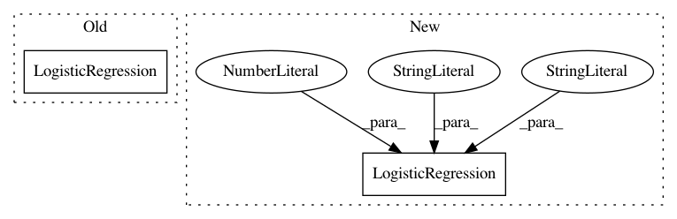

bcabf319eab3dcd3902125da344d13eafd1669a6,mne/decoding/tests/test_search_light.py,,test_generalization_light,#,158
Before Change
assert_array_equal(score, manual_score)
// n_jobs
gl = GeneralizingEstimator(LogisticRegression(), n_jobs=2)
gl.fit(X, y)
y_pred = gl.predict(X)
assert_array_equal(y_pred.shape, [n_epochs, n_time, n_time])
After Change
from sklearn.linear_model import LogisticRegression
from sklearn.metrics import roc_auc_score
logreg = LogisticRegression(solver="liblinear", multi_class="ovr",
random_state=0)
X, y = make_data()
n_epochs, _, n_time = X.shape
// fit
In pattern: SUPERPATTERN
Frequency: 4
Non-data size: 2
Instances
Project Name: mne-tools/mne-python
Commit Name: bcabf319eab3dcd3902125da344d13eafd1669a6
Time: 2018-09-27
Author: alexandre.gramfort@m4x.org
File Name: mne/decoding/tests/test_search_light.py
Class Name:
Method Name: test_generalization_light
Project Name: mne-tools/mne-python
Commit Name: bcabf319eab3dcd3902125da344d13eafd1669a6
Time: 2018-09-27
Author: alexandre.gramfort@m4x.org
File Name: mne/decoding/tests/test_search_light.py
Class Name:
Method Name: test_search_light
Project Name: ntucllab/libact
Commit Name: e491129a36b49f1fc53762dfea6ae60e6488adad
Time: 2018-10-08
Author: yangarbiter@gmail.com
File Name: libact/query_strategies/multilabel/tests/test_multilabel_realdata.py
Class Name: MultilabelRealdataTestCase
Method Name: test_multilabel_with_auxiliary_learner_hlr
Project Name: scikit-learn-contrib/categorical-encoding
Commit Name: 5e9e803c9131b377af305d5302723ba2415001da
Time: 2019-04-27
Author: jan@motl.us
File Name: examples/encoding_examples.py
Class Name:
Method Name: main